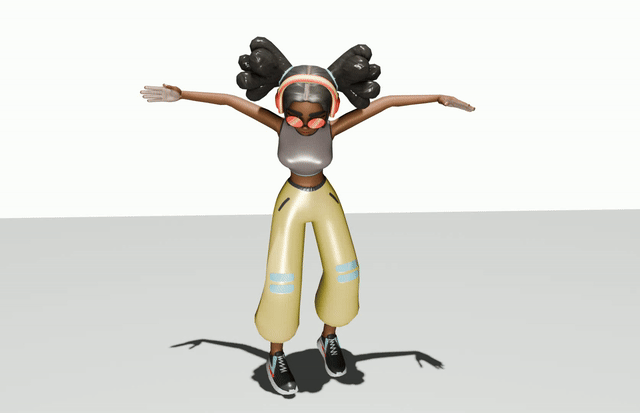
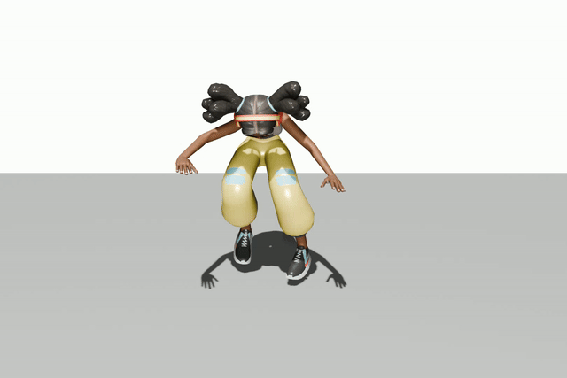
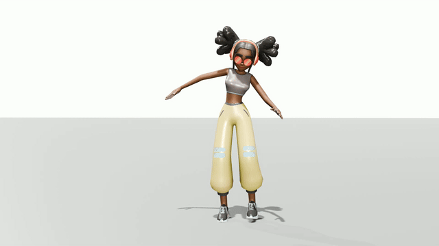
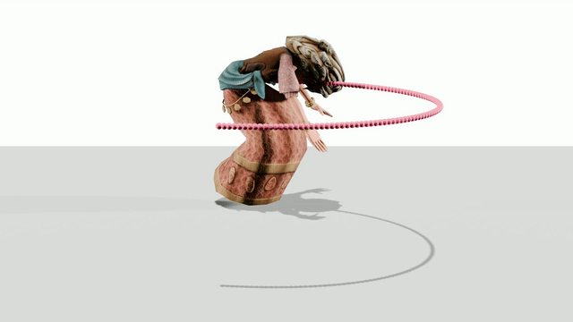

AnyAct: Towards Human Reenactment of Character Motion From Video
arXiv 2026
 Watch full video
Watch full video
Abstract
AnyAct aims to reenact human motion from arbitrary character videos. Given a source video of an animal, cartoon, object, or stylized character, the method extracts sparse local 2D articulated cues and generates a plausible 3D human motion sequence that follows the character's action semantics.
Method Overview
AnyAct follows a two-stage training pipeline. A 3D stage first learns motion generation with sparse motion guidance, and a 2D stage then learns to control generation from projected sparse 2D observations. At inference time, sparse 2D controls extracted from a source character video drive the generated human motion.
Qualitative Results
Representative examples from the project video are shown below.






Citation
@article{chen2026anyact,
title={AnyAct: Towards Human Reenactment of Character Motion From Video},
author={Chen, Liuhan and Zhong, Lei and Wang, Jiewei and Shuai, Qin and Yuan, Li and Fan, Leidong and Li, Qing and Liu, Kanglin},
journal={arXiv preprint arXiv:2605.15497},
year={2026}
}